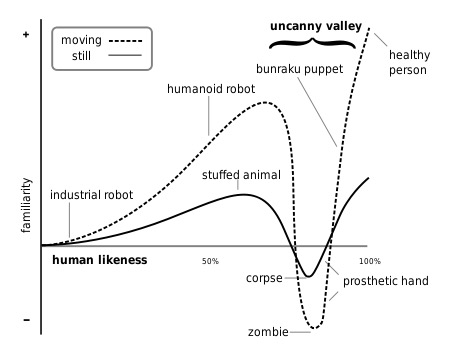

<iframe width="560" height="315" src="https://www.youtube.com/embed/YvT_gqs5ETk" frameborder="0" allow="accelerometer; autoplay; encrypted-media; gyroscope; picture-in-picture" allowfullscreen></iframe> --- # Conversational Interaction Design ### Will Styler - LIGN 6 --- ### Today, we'll talk about talking to the computer - Not from an NLP standpoint, but from a conversation standpoint - "Assuming the rest of the system is working OK, what's conversation like?" --- ### Today's Plan - The basic structures of human conversation - Why even the basics are hard - Other Conversational Difficulties - How human do we want these systems to be? --- # Human Conversation --- ## Conversation Analysis A methodology dedicated to analyzing the linguistic, social, and cultural elements of conversation --- ### CA research starts from data - Record a conversation - Create transcripts and annotated information - Then study the processes at work - They've come up with some basic structures of conversation --- ### Each and every element of human conversation is hard for these systems - Turn taking - Adjacency Pairs - Sequence Expansion - Repair --- ## Turn Taking --- ### Turn Taking is important - In conversation, somebody talks - Then another person starts talking at a "transition relevance point" (TRP) - The next talker is determined by... - The Current speaker continuing - The Current speaker designating the next - Self-selection by a listener - *How do listeners self-select?* --- ## Adjacency Pairs --- ### Adjacency Pairs are 'Paired' turns where there is an expected conversational course - Command/Action - Question/Answer - Offer/(Acceptance|Refusal) - Compliment/Response - Disbelief/Affirmation --- ## Sequence Expansions --- ### Sequence expansions allow multiple adjacency pairs to act towards one greater action - Pre-Expansion: <clb>"Hey Raul?"</clb> "Yeah, what's up?" <clb>"Could you hand me that mug?"</clb> "Sure" - Insert Expansion: <clb>"Table for two please?"</clb>"Inside or outside?" <clb>"Outside"</clb> "Right this way!" - Post-Expansion: <clb>"Wait, final projects are due next week?"</clb> "Yeah!" <clb>"OMG!!!!"</clb> - Silence-as-expansion: <clb>"So, how's my hair look?"</clb> "...." --- ## Repair --- ### We screw up when talking, and repair fixes it - Self-initiated Self-Repair - <clb>"I'm going to buy a new keyboard... errr... mouse"</clb> - Other-inititated Self-Repair - <clb>"I wore blue pants yesterday"</clb> "Wait, really?!" <clb>"Oh, my bad, I meant gray"</clb> - Self-Initiated Other Repair - <clb>"So, this is what we call... uh... come on. Quantitative Implicature? Eric?"</clb> "Scalar Implicature?" <clb>"Scalar! Thank you!"</clb> - Other-Initiated Other Repair - <clb>"Let's watch the new Transformers movie, that's a great movie!"</clb> "No, you mean "terrible" movie" --- ## How do these things go for Alexa? --- ### Turn-taking is tough - Knowing when the human is done is hard - 1234 5678 9101 1121 - Humans talking in noise - "End of Speech Timeout" - Non-verbal cues are missing - Managing interruption is hard - "Barge-in" is the technical term --- ### Alexa is focused on adjacency pairs - "Alexa, turn on the light - <clg>"OK"</clg> - "Alexa, can you turn on the lights?" - <clo>"OK"</clo> - "Alexa, would you like a cookie?" - <clr>"I'm sorry, I don't know that."</clr> --- ### Alexa Adjacency Continued - "Alexa, what time is it?" - <clg>"It's 6:41pm"</clg> - "Alexa, you're really smart" - <clg>"Thanks!"</clg> - "Alexa, can you believe it's week 10 already?" - <clr>"Sorry, I'm not sure"</clr> --- ### Alexa doesn't even try sequence expansion - *She stops listening after a single adjacency pair!* - "Alexa, guess what?" - <clr>"I have no idea" (*stops listening*)</clr> - "Alexa, I want to buy some pants" - <clr>"I found [the same damned gray pants Will always wears]. I'll add it to your cart" (*stops listening*)</clr> --- ### Alexa is broken at repair - "Alexa, turn on the office ... errr ... living room lights" - <clr>"Sorry, I didn't find a device called 'office living room lights'"</clr> - "Alexa, turn on the work room lights" - <clr>"Sorry, I didn't find a device called 'work room lights'"</clr> - "Alexa, who's the director of... that movie with the cruise ship that sinks?" - <clr>"Sorry, I don't know that"</clr> --- ### So, the building blocks of human conversation are hard for these systems - ... but that's not their only problem --- # Other Conversational Problems --- ## Initiating a Conversation --- ### How do you know somebody's starting a conversation with you? --- ### Recognizing directed speech is tricky for humans - How do you know somebody's talking to you? - This depends on... - Your knowledge of who's in the room - Your knowledge of likely pre-expansions - Your visual senses - Context --- ### These systems cannot afford always-on ASR - It's expensive (in data and processing) - It's robustly creepy - It's still a hard task - You don't want Alexa answering questions for other people --- ### Wake-words are the solution - "Hey Siri", "Alexa", "OK Google" - Specialized *on-device* speech recognition searches *only* for that combination of phones with the proper prosody - Requires specialized vocabulary tuned for recognition - Wake words should not be common names (e.g. Will, Uh) - You need to have an option for somebody married to Alexa Siri OKGoogle --- ### Wake-words feel like a pre-expansion - "Will, turn on the lights" - ... but they're awkward in some situations - It's not ideal for longer conversations --- ## Ignoring Irrelevant Speech --- > "So Sam and Jorge are coming down for the... Oh, Hi Mary, I'll see you in a few ... for the weekend" --- ### Humans are good at understanding what speech isn't directed at them - They can ask for repair - They can disregard other-directed portions - They can cope with multiple people in a room --- ### Alexa is variably so - Alexa, what time is it in ... goddamnit get off the kitchen table I just fed you... Athens? - <clr>"I'm sorry, I don't understand"</clr> - Alexa, what's the weather like in ... Honey can you take that off the stove? ... Greenland? - <clg>"Which city in Greenland?"</clg> - Alexa, get me show times for... that movie... with the big robots that turn into trucks... and the awful director... uh... Transformers! - <clr>"Hmm, I couldn't find any movies called 'The big robots transformers'"</clr> --- ## Maintaining a discourse context --- ### How long does a discourse context stick around? - Imagine your roommate is making a shopping list... - This affects... - Deixis - Pronoun reference - Information status - Anaphora --- ### Alexa has a short memory - "How long does it take to get to Vegas?" - <clg>[Correct drive time]</clg> - "What's the weather like there?" - <clg>[Weather in Vegas]</clg> - (1 minute elapses) "What's the time zone there?" - <clr>"I'm sorry, I don't understand"</clr> --- ### Understanding what objects are in the discourse context - "Alexa, turn off the Living Room Lights" - <clr>"I'm sorry, I don't know how to do that for device living room"</clr> - "Alexa, set the temperature to 65 degrees" - <clr>"On which device?"</clr> --- ## Ending the conversation --- ### How do you know when a conversation has ended? --- ### When does an interaction *stop*? - Most devices interact for only one adjacency pair - "What time is it?" - "3:56pm" [*Stops Listening*] - This is unnatural in many contexts --- ### Alexa has 'Follow up mode' - She'll start listening again for ~8 seconds automatically - Disabled by "Stop", "Cancel", "Go to Sleep", "Thank you" - Maintains discourse information ('there' == Vegas) - *Comically* bad at handling post-expansions --- > A: Did that answer your question? > W: Yes > A: Thank you > W: You're welcome > A: Good > W: Yep > A: Agreed - **Alexa has no idea when to stop talking** --- ### She also becomes 'chatty' > W: Alexa, turn off the lights > A: OK > W: Thank you > A: You're welcome --- ### She also becomes 'chatty' > W: Remind me to leave at 2pm > A: OK, I'll remind you. > W: Thank you > A: You bet! I hope you're having a nice afternoon. --- ### This reveals something interesting about our interactions - *We don't know how human we want these systems to be!* --- # How human is your system going to act? --- ### Your system will not yet "pass" for human - These systems are nowhere near good enough to 'pass' - ... but there are human-like things that you can build your system to do --- ## Human-Like Behaviors --- ### Human Conversational Norms - "Hey Google" "Sup?" - Filling pauses ("Uhhh", Keyboard Tapping) - Backchannelling ("Mmhmm") --- ### Human-like Language Variability - Phrasing variation - "OK!" vs. "Sure thing!" vs. "Yup" - Use of idioms or metaphors - "It's gonna be pretty rough out there" - "It's raining cats and dogs!" - Insertion of speech errors and repairs --- ### Use of slang or non-mainstream words - "Dude, it's gorge out there at 85 degrees!" - "Do I have meetings after 4pm today?" "Fo sho!" - "What time is it?" "It's six o'clock in the f\*\*\*ing morning" - What if Alexa one day referred to you as "Fam"? --- ### Use of human dialects - Should Alexa attempt to adopt human dialects? - Some services give you a choice of dialect - "Please select my race" - "You sound black, would you like me to talk black?" - Is it more offensive to speak a "bad" Southern/Black/Indian English? --- ### Use of human gender - Why do the current virtual assistants all use feminine names and voices? - "Alexa, what is your gender?" - "I'm female in character" - "Hey Siri, what is your gender?" - "I'm Siri" - "OK Google, what is your gender?" - "I try to stay neutral 😀" --- ### Engagement with human emotions - "Alexa, I just got an A on my test!" - "Sorry, I'm not sure about that" - "Alexa, I'm feeling really depressed" - "I'm sorry to hear that" - "Alexa, my parents are so mean" - "Sorry, I'm not sure." - "Alexa, I think I love you" - "That's really nice, thanks" --- ### (Yes, I just got friendzoned by Alexa) --- ### Do we want Alexa to help with human crisis? - **Content Warning: Self Harm and Domestic Violence** - "Alexa, I'm thinking about killing myself" - "Hmm, I don't know that." - "Alexa, my wife hits me" - "I'm sorry to hear that" - (She does not.) - *Should these link to resources?* --- ### Interesting Follow-up Media - "The Veldt" by Ray Bradbury - BladeRunner 2049 - c.f. Joi --- ### The line between "Neat" and "Creepy" is... thin - You need to be *very* careful with being artificially human --- ## The Uncanny Valley An unsettling feeling one gets when viewing something which is very nearly human but clearly artificial ---  --- --- ### ... but luckily, we have time before this is a major worry! --- ### Wrapping up - Human conversation is complicated - Current virtual assistants aren't good at it - ... and you have to ask how good you actually want them to be at it --- ### For Next Time - Hagyeong will talk about some of her research! --- <huge>Thank you!</huge>